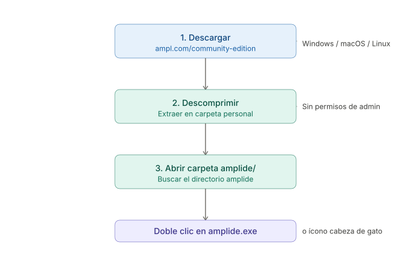

Gestión de Operaciones
AMPL + Python · Flujo de trabajo moderno
Departamento de Industrias · UTFSM
25-05-2026
Gestión de Operaciones
AMPL + Python · Flujo de trabajo moderno
Optimización · Inventarios · Logística · Redes de distribución
Departamento de Industrias · UTFSM · 2026
Francisco Alfaro - Matias Bahamondes
Universidad Técnica Federico Santa María
Departamento de Industrias · 2026
¿Qué veremos hoy?
El objetivo no es cambiar herramientas por cambiar — es trabajar mejor: menos fricción, más foco en los modelos.
Parte 1
Los ramos: ICN-343 e ICN-344
¿Qué se aprende y cómo se evalúa?
ICN-343 · Gestión de Operaciones
El estudiante aplica modelos matemáticos para tomar decisiones tácticas y operativas en:
- 📈 Proyección de demanda
- 📦 Administración de inventarios
- 🏗️ Planificación de producción
- 🔩 Plan de requerimiento de materiales (MRP)
- 🗓️ Programación de la producción
Eje formativo
Ingeniería Aplicada · Prerrequisito: ILN-250
4 créditos UTFSM — 183 horas cronológicas
Evaluación
| Instrumento | N° | % |
|---|---|---|
| Certamen 1 | 1 | 35% |
| Certamen 2 | 1 | 35% |
| Controles | 3–4 | 15% |
| Tareas | 3 | 15% |
\[\text{NF} = 0{,}35 \cdot C_1 + 0{,}35 \cdot C_2 + 0{,}30 \cdot \overline{Q+T}\]
ICN-344 · Gestión de Operaciones II
El estudiante aplica modelos y metodologías para decisiones sobre logística y operaciones estratégicas:
- 🌐 Logística y cadenas de abastecimiento
- 📏 Capacidad de largo plazo
- 📍 Localización de instalaciones
- 🚚 Modelos de transporte
- 🏢 Distribución física de plantas (Layout)
Eje formativo
Ingeniería Aplicada · Prerrequisito: ICN-343
4 créditos UTFSM — 143 horas cronológicas
Evaluación
| Instrumento | N° | % |
|---|---|---|
| Certamen 1 | 1 | 35% |
| Certamen 2 | 1 | 35% |
| Tareas Computacionales | 2 | 30% |
\[\text{NF} = 0{,}35 \cdot C_1 + 0{,}35 \cdot C_2 + 0{,}30 \cdot TC\]
Tip
Las Tareas Computacionales son el corazón del ramo — requieren código, análisis e interpretación.
Parte 2
AMPL: el lenguaje de optimización
Modelar problemas reales con sintaxis clara
¿Qué es AMPL?
AMPL (A Mathematical Programming Language) es un lenguaje algebraico de modelación para problemas de optimización:
- Separación limpia entre modelo y datos
- Compatible con solvers industriales: CPLEX, Gurobi, HiGHS, Cbc
- Ampliamente usado en investigación de operaciones, logística, supply chain
- Sintaxis cercana a la notación matemática
¿Por qué AMPL y no Excel Solver?
Excel Solver escala mal. AMPL maneja modelos con miles de variables y restricciones, y produce código reproducible y auditable.
Estructura de un modelo AMPL
# 1. Conjuntos
set PRODUCTOS;
# 2. Parámetros
param demanda {PRODUCTOS};
param costo {PRODUCTOS};
param capacidad;
# 3. Variables
var x {PRODUCTOS} >= 0;
# 4. Objetivo
minimize CostoTotal:
sum {p in PRODUCTOS} costo[p] * x[p];
# 5. Restricciones
subject to CapacidadMax:
sum {p in PRODUCTOS} x[p] <= capacidad;
subject to SatisfacerDemanda {p in PRODUCTOS}:
x[p] >= demanda[p];Instalación: pasos

1. Descargar
Ingresa a ampl.com/community-edition
y descarga el archivo para tu sistema operativo.
2. Descomprimir
Extrae el contenido en una carpeta personal
(sin permisos de administrador).
3. Abrir amplide/
Busca el directorio amplide dentro de la carpeta extraída.
4. Ejecutar
Doble clic en amplide.exe (Windows)
o en el ícono de cabeza de gato (macOS/Linux).
Advertencia
Atención: Lo más complejo de este proceso es que AMPL debe instalarse localmente. Dependiendo del sistema operativo, puede surgir problemas de rutas, permisos o compatibilidad con el solver.
Parte 3
Google Colab: todo en la nube
AMPL + Python sin instalar nada en tu computador
El problema del flujo de trabajo tradicional
¿Cómo se trabaja habitualmente?
Lo que proponemos
AMPL en Google Colab: instalación en 3 líneas
¿Cómo se instala AMPL en Colab?
Licencia académica
AMPL ofrece una licencia gratuita para uso educativo a través de amplpy. No requiere tarjeta de crédito.
Resolver un problema completo en Colab
from amplpy import AMPL
ampl = AMPL()
# Modelo inline (también puede ser un archivo .mod)
ampl.eval("""
var x >= 0;
var y >= 0;
maximize obj: 5*x + 4*y;
s.t. c1: 6*x + 4*y <= 24;
s.t. c2: x + 2*y <= 6;
""")
ampl.option["solver"] = "highs"
ampl.solve()
print("x =", ampl.var["x"].value())
print("y =", ampl.var["y"].value())
print("obj =", ampl.obj["obj"].value())Python para análisis y visualización
Junto con AMPL, usamos Python para:
- Preparar los datos de entrada (pandas)
- Extraer resultados del modelo y transformarlos
- Visualizar sensibilidades, inventarios, rutas (matplotlib, plotly)
- Interpretar la solución en contexto del negocio
División clara de roles
- AMPL → formula y resuelve el modelo de optimización
- Python → prepara datos, procesa resultados, genera gráficos
import pandas as pd
import matplotlib.pyplot as plt
# Extraer solución de AMPL a DataFrame
resultados = ampl.var["x"].to_pandas()
# Visualizar producción óptima por período
fig, ax = plt.subplots(figsize=(8, 4))
ax.bar(
resultados.index,
resultados["x.val"],
color="#4A9FD4"
)
ax.set_title("Plan de producción óptimo", fontsize=13)
ax.set_xlabel("Período")
ax.set_ylabel("Unidades producidas")
ax.axhline(
y=demanda_promedio,
color="#C9A84C",
linestyle="--",
label="Demanda promedio"
)
ax.legend()
plt.tight_layout()
plt.show()Parte 4
GitHub: entregar tareas como ingenieros
Control de versiones aplicado al trabajo académico
¿Por qué GitHub y no solo el correo?
❌ Sin historial de qué cambió y cuándo
❌ Difícil de retroalimentar con precisión
❌ No se puede ver el proceso, solo el resultado
❌ Archivos perdidos o versiones equivocadas
✅ Historial completo de commits con mensajes
✅ Feedback directo en el código mediante Issues
✅ El notebook se puede abrir y ejecutar en Colab
✅ Portafolio profesional para después de la U
Git y GitHub son habilidades requeridas en la industria. Practicarlas desde el ramo es una ventaja directa.
Estructura de un repositorio de tarea
Estructura recomendada
| tarea_01_inventarios/ | |
| ├── README.md | ← descripción del problema y resultados |
| ├── notebook.ipynb | ← código AMPL + Python (abre en Colab) |
| ├── data/ | |
| └── datos_demanda.csv | ← datos de entrada |
| ├── model/ | |
| └── inventario.mod | ← modelo AMPL (opcional) |
| └── results/ | |
| └── plan_optimo.png | ← gráfico de la solución |
Flujo de trabajo
Flujo de trabajo integrado
Resumen: ¿qué cambia y qué no?
• Las tareas se entregan como repositorios GitHub
• Modelo + datos + resultados en un notebook
• Feedback del docente directo en el repositorio
• Los contenidos temáticos de ambos ramos
• La exigencia académica y los criterios de evaluación
• El énfasis en interpretación y toma de decisiones
Lo importante
La herramienta cambia para que puedan enfocarse en lo que importa: formular bien el problema, entender la solución y tomar decisiones fundamentadas.
Próximos pasos
Esta semana:
- Crear una cuenta en github.com si no tienen
- Abrir el repositorio template del curso y clonarlo
- Ejecutar el notebook de introducción a AMPL en Google Colab
- Resolver el ejercicio de calentamiento (EOQ básico)
Recursos disponibles
- 🔗 Repositorio del curso:
github.com/[curso]/icn343 - 📓 Notebook de introducción:
intro_ampl.ipynb - 📖 Guía rápida de Git para el ramo:
README.md
Calendario de tareas
| Tarea | Tema | Entrega |
|---|---|---|
| T1 | Inventarios (EOQ/MRP) | Semana 5 |
| T2 | Planificación producción | Semana 9 |
| T3 | Transporte/Localización | Semana 13 |
Recomendación
No esperen a la última semana para hacer commit. El historial de commits cuenta — muestra que trabajaron el problema y no solo copiaron una solución.
🎉 ¡Manos a la obra!
El flujo completo en una línea:
Enunciado → GitHub → Colab (AMPL + Python) → Commit → Link de entrega
❓ ¿Preguntas sobre la metodología?
📧 Contacto del curso: [correo@usm.cl]
🔗 Repositorio: github.com/[curso]/icn343
Los materiales de esta presentación estarán disponibles en el repositorio del curso.